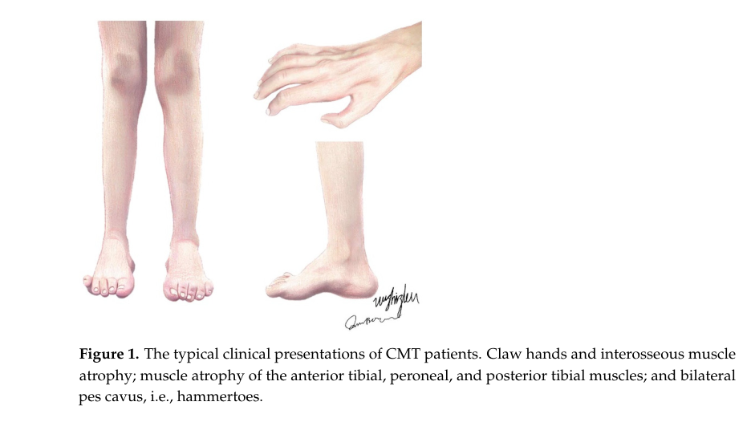

Charcot-Marie-Tooth disease type 1 (CMT1) is the demyelinating compartment of Charcot-Marie-Tooth disease: a group of inherited peripheral neuropathies in which the primary lesion lies in the myelinating Schwann cell rather than the axon. Motor nerve conduction velocities are uniformly slowed (classically <38 m/s in the median nerve), reflecting dysmyelination and demyelination, and the characteristic clinical phenotype — slowly progressive distal weakness, sensory loss, pes cavus, and depressed reflexes — emerges from secondary, length-dependent axonal loss that follows the primary myelin defect. This entry collects the Schwann-cell / myelin mechanisms that converge on a single shared terminal node (demyelination with secondary axonal degeneration), distinct from the neuron-primary axonal mechanisms curated under Charcot-Marie-Tooth disease type 2. The dominant subtype is CMT1A, caused by a 1.4 Mb duplication on chromosome 17p11.2 containing PMP22; CMT1B is caused by MPZ mutations. The X-linked form CMTX1 (GJB1 / connexin-32) is electrophysiologically intermediate but is grouped here because its primary lesion is a Schwann-cell gap-junction defect; it forms the glia-axon bridge between the demyelinating and axonal compartments.
Ask a research question about Charcot-Marie-Tooth Disease Type 1. OpenScientist will conduct autonomous deep research using the Disorder Mechanisms Knowledge Base and PubMed literature (typically 10-30 minutes).
Do not include personal health information in your question. Questions and results are cached in your browser's local storage.
name: Charcot-Marie-Tooth Disease Type 1
creation_date: "2026-06-11T00:00:00Z"
category: Mendelian
description: >-
Charcot-Marie-Tooth disease type 1 (CMT1) is the demyelinating compartment of
Charcot-Marie-Tooth disease: a group of inherited peripheral neuropathies in
which the primary lesion lies in the myelinating Schwann cell rather than the
axon. Motor nerve conduction velocities are uniformly slowed (classically
<38 m/s in the median nerve), reflecting dysmyelination and demyelination, and
the characteristic clinical phenotype — slowly progressive distal weakness,
sensory loss, pes cavus, and depressed reflexes — emerges from secondary,
length-dependent axonal loss that follows the primary myelin defect. This entry
collects the Schwann-cell / myelin mechanisms that converge on a single shared
terminal node (demyelination with secondary axonal degeneration), distinct from
the neuron-primary axonal mechanisms curated under Charcot-Marie-Tooth disease
type 2. The dominant subtype is CMT1A, caused by a 1.4 Mb duplication on
chromosome 17p11.2 containing PMP22; CMT1B is caused by MPZ mutations. The
X-linked form CMTX1 (GJB1 / connexin-32) is electrophysiologically intermediate
but is grouped here because its primary lesion is a Schwann-cell gap-junction
defect; it forms the glia-axon bridge between the demyelinating and axonal
compartments.
disease_term:
preferred_term: Demyelinating Charcot-Marie-Tooth disease (CMT1)
term:
id: MONDO:0019011
label: Charcot-Marie-Tooth disease type 1
parents:
- Charcot-Marie-Tooth disease
has_subtypes:
- name: CMT1A
display_name: CMT1A (PMP22 duplication)
description: >-
The most common CMT subtype overall, caused by a 1.4 Mb tandem duplication of
chromosome 17p11.2 containing PMP22. PMP22 overexpression destabilizes compact
myelin, producing dysmyelination, demyelination, and onion-bulb formation.
evidence:
- reference: DOI:10.1093/brain/awae064
reference_title: "Whole genome sequencing increases the diagnostic rate in Charcot-Marie-Tooth disease"
supports: SUPPORT
evidence_source: HUMAN_CLINICAL
snippet: "The most common genetic diagnosis was PMP22 duplication (CMT1A; 505/1165, 43.3%)"
explanation: Establishes PMP22 duplication / CMT1A as the dominant genetic cause within the demyelinating compartment.
- name: CMT1B
display_name: CMT1B (MPZ-related)
description: >-
Caused by mutations in MPZ encoding myelin protein zero, the most abundant
peripheral myelin protein. Many MPZ variants trigger protein misfolding, the
unfolded protein response, and chronic Schwann-cell ER stress.
evidence:
- reference: DOI:10.3390/ijms25179227
reference_title: "Navigating the Landscape of CMT1B: Understanding Genetic Pathways, Disease Models, and Potential Therapeutic Approaches"
supports: SUPPORT
evidence_source: OTHER
snippet: "Mutations in the MPZ gene can lead to protein misfolding, unfolded protein response (UPR), endoplasmic reticulum (ER) stress, or protein mistrafficking."
explanation: Establishes UPR / ER stress as the canonical CMT1B (MPZ) Schwann-cell mechanism.
- name: CMTX1
display_name: CMTX1 (GJB1 / connexin-32, X-linked intermediate bridge)
description: >-
X-linked form caused by mutations in GJB1 encoding connexin-32, a Schwann-cell
gap-junction protein at the paranodes and Schmidt-Lanterman incisures. Grouped
in the demyelinating compartment because the primary lesion is a Schwann-cell
gap-junction defect, though its electrophysiology is intermediate and its
pathology shows both demyelination and axon loss — the glia-axon bridge between
the CMT1 and CMT2 compartments.
evidence:
- reference: DOI:10.1093/brain/awae064
reference_title: "Whole genome sequencing increases the diagnostic rate in Charcot-Marie-Tooth disease"
supports: SUPPORT
evidence_source: HUMAN_CLINICAL
snippet: "then GJB1 (CMTX1; 151/1165, 13.0%)"
explanation: GJB1 / CMTX1 is the second most common genetically resolved CMT subtype.
- name: CMT1D
display_name: CMT1D (EGR2-related)
description: >-
Demyelinating CMT caused by mutations in EGR2 (Krox20), a transcription
factor required for Schwann-cell myelination. The same gene also causes
congenital hypomyelinating neuropathy and Dejerine-Sottas neuropathy at the
severe end of the spectrum.
evidence:
- reference: PMID:9537424
reference_title: "Mutations in the early growth response 2 (EGR2) gene are associated with hereditary myelinopathies."
supports: SUPPORT
evidence_source: HUMAN_CLINICAL
snippet: "we have identified one recessive and two dominant missense mutations in EGR2 (within regions encoding conserved functional domains) in patients with congenital hypomyelinating neuropathy (CHN) and a family with Charcot-Marie-Tooth type 1 (CMT1)."
explanation: Establishes EGR2 mutations as a cause of demyelinating CMT1 (CMT1D).
pathophysiology:
- name: PMP22 Overexpression and Dysmyelination
description: >-
The most common cause of CMT (CMT1A) is a 1.4 Mb tandem duplication of
chromosome 17p11.2 containing the peripheral myelin protein 22 (PMP22) gene.
PMP22 overexpression destabilizes compact myelin and disrupts the structural
organization of the myelin sheath, causing dysmyelination, demyelination, and
characteristic onion-bulb formation from repeated Schwann-cell remyelination
attempts. Slowed nerve conduction follows, and chronic secondary axonal loss
eventually drives the clinical phenotype.
cell_types:
- preferred_term: Schwann cell
term:
id: CL:0002573
label: Schwann cell
biological_processes:
- preferred_term: Myelination in the peripheral nervous system
term:
id: GO:0022011
label: myelination in peripheral nervous system
modifier: DECREASED
genes:
- preferred_term: PMP22
term:
id: hgnc:9118
label: PMP22
downstream:
- target: Demyelination and Secondary Axonal Loss
description: >-
PMP22-dosage-driven dysmyelination produces demyelination and, over time,
length-dependent secondary axonal degeneration.
evidence:
- reference: DOI:10.1093/brain/awae064
reference_title: "Whole genome sequencing increases the diagnostic rate in Charcot-Marie-Tooth disease"
supports: SUPPORT
evidence_source: HUMAN_CLINICAL
snippet: "The most common genetic diagnosis was PMP22 duplication (CMT1A; 505/1165, 43.3%)"
explanation: Establishes PMP22 duplication / CMT1A as the dominant genetic cause of demyelinating CMT.
- name: MPZ Misfolding and Schwann Cell ER Stress
description: >-
MPZ (myelin protein zero) mutations cause CMT1B. Many MPZ variants produce
protein misfolding that triggers the unfolded protein response (UPR) and
chronic endoplasmic reticulum (ER) stress in Schwann cells, or cause
mistrafficking of the mutant protein. The resulting myelin instability drives
the demyelinating CMT1B phenotype.
cell_types:
- preferred_term: Schwann cell
term:
id: CL:0002573
label: Schwann cell
biological_processes:
- preferred_term: Endoplasmic reticulum unfolded protein response
term:
id: GO:0030968
label: endoplasmic reticulum unfolded protein response
modifier: INCREASED
genes:
- preferred_term: MPZ
term:
id: hgnc:7225
label: MPZ
downstream:
- target: Demyelination and Secondary Axonal Loss
description: >-
Misfolded-MPZ-driven Schwann-cell ER stress destabilizes myelin, producing
demyelination and secondary axonal degeneration.
evidence:
- reference: DOI:10.3390/ijms25179227
reference_title: "Navigating the Landscape of CMT1B: Understanding Genetic Pathways, Disease Models, and Potential Therapeutic Approaches"
supports: SUPPORT
evidence_source: OTHER
snippet: "Mutations in the MPZ gene can lead to protein misfolding, unfolded protein response (UPR), endoplasmic reticulum (ER) stress, or protein mistrafficking."
explanation: Establishes UPR / ER stress as the canonical CMT1B disease mechanism.
- name: Connexin-32 Gap Junction Failure in CMTX1
description: >-
GJB1 mutations cause loss of function of connexin-32, which forms reflexive
gap-junction channels across the non-compact myelin of the paranodes and
Schmidt-Lanterman incisures, shortening the radial diffusion pathway between
the Schwann-cell body and the adaxonal cytoplasm. Loss of these channels
impairs Schwann-cell homeostasis and myelin maintenance, producing the
X-linked demyelinating-spectrum neuropathy CMTX1.
cell_types:
- preferred_term: Schwann cell
term:
id: CL:0002573
label: Schwann cell
biological_processes:
- preferred_term: Gap junction assembly
term:
id: GO:0016264
label: gap junction assembly
modifier: ABNORMAL
genes:
- preferred_term: GJB1
term:
id: hgnc:4283
label: GJB1
downstream:
- target: Demyelination and Secondary Axonal Loss
description: >-
Connexin-32 gap-junction failure impairs Schwann-cell homeostasis, producing
demyelination together with axon loss in CMTX1.
evidence:
- reference: PMID:30881289
reference_title: "Role of Connexin-Based Gap Junction Channels in Communication of Myelin Sheath in Schwann Cells."
supports: SUPPORT
evidence_source: OTHER
snippet: "Most GJB1 mutations cause disability through the loss of function of Cx32"
explanation: Establishes loss of function of connexin-32 (Cx32) as the dominant CMTX1 disease mechanism.
- name: Demyelination and Secondary Axonal Loss
conforms_to: "peripheral_axonal_degeneration#Distal Axonal Degeneration and Demyelination"
description: >-
The shared terminal node of the demyelinating compartment. Primary Schwann-cell
and myelin defects (PMP22 dosage, MPZ misfolding, connexin-32 gap-junction
failure) converge on segmental demyelination and repeated remyelination
(onion-bulb formation), which over time produces length-dependent secondary
axonal degeneration. It is this secondary axonal loss, affecting the longest
motor and sensory fibers first, that determines the progressive clinical
deficit shared with the axonal compartment.
cell_types:
- preferred_term: Schwann cell
term:
id: CL:0002573
label: Schwann cell
- preferred_term: Sensory neuron of peripheral nervous system
term:
id: CL:0000101
label: sensory neuron
biological_processes:
- preferred_term: Myelination in the peripheral nervous system
term:
id: GO:0022011
label: myelination in peripheral nervous system
modifier: DECREASED
evidence:
- reference: PMID:30881289
reference_title: "Role of Connexin-Based Gap Junction Channels in Communication of Myelin Sheath in Schwann Cells."
supports: SUPPORT
evidence_source: OTHER
snippet: "Typically, the pathophysiology of CMTX1 includes features of both demyelination and axon loss"
explanation: Supports the convergence of demyelinating CMT mechanisms on combined demyelination and secondary axonal loss.
phenotypes:
- category: Neurologic
name: Distal Muscle Weakness
diagnostic: true
phenotype_term:
preferred_term: Distal muscle weakness
term:
id: HP:0002460
label: Distal muscle weakness
clinical_course: PROGRESSIVE
evidence:
- reference: PMID:9183252
reference_title: "Charcot-Marie-Tooth disease type 1A with 17p11.2 duplication. Clinical and electrophysiological phenotype study and factors influencing disease severity in 119 cases."
supports: SUPPORT
evidence_source: HUMAN_CLINICAL
snippet: "The predominant clinical signs were muscle weakness and wasting in the lower limbs."
explanation: 119-case CMT1A study identifies distal lower-limb muscle weakness as the predominant clinical sign.
- category: Neurologic
name: Onion Bulb Formation
description: >-
Concentric Schwann-cell and fibroblast processes around demyelinated and
remyelinated axons on nerve biopsy, the histological hallmark of chronic
demyelinating neuropathy and a feature that distinguishes CMT1 from axonal CMT2.
phenotype_term:
preferred_term: Onion bulb formation
term:
id: HP:0003383
label: Onion bulb formation
- category: Musculoskeletal
name: Pes Cavus
phenotype_term:
preferred_term: Pes cavus
term:
id: HP:0001761
label: Pes cavus
evidence:
- reference: PMID:9183252
reference_title: "Charcot-Marie-Tooth disease type 1A with 17p11.2 duplication. Clinical and electrophysiological phenotype study and factors influencing disease severity in 119 cases."
supports: SUPPORT
evidence_source: HUMAN_CLINICAL
snippet: "None of the patients was normal on clinical examination and all presented at least pes cavus or ankle jerk areflexia."
explanation: In a 119-case CMT1A cohort, every patient had at least pes cavus or ankle areflexia on examination.
- category: Neurologic
name: Decreased Tendon Reflexes
phenotype_term:
preferred_term: Hyporeflexia
term:
id: HP:0001265
label: Hyporeflexia
evidence:
- reference: PMID:9183252
reference_title: "Charcot-Marie-Tooth disease type 1A with 17p11.2 duplication. Clinical and electrophysiological phenotype study and factors influencing disease severity in 119 cases."
supports: SUPPORT
evidence_source: HUMAN_CLINICAL
snippet: "None of the patients was normal on clinical examination and all presented at least pes cavus or ankle jerk areflexia."
explanation: Ankle-jerk areflexia was a near-universal examination finding in this CMT1A cohort.
- category: Neurologic
name: Distal Sensory Loss
phenotype_term:
preferred_term: Distal sensory impairment
term:
id: HP:0002936
label: Distal sensory impairment
evidence:
- reference: PMID:9183252
reference_title: "Charcot-Marie-Tooth disease type 1A with 17p11.2 duplication. Clinical and electrophysiological phenotype study and factors influencing disease severity in 119 cases."
supports: SUPPORT
evidence_source: HUMAN_CLINICAL
snippet: "Sensory potentials were abnormal in all cases, even where there was no clinical sensory loss."
explanation: Sensory nerve potentials were abnormal in all CMT1A cases, evidencing the sensory component of the neuropathy.
genetic:
- name: PMP22
gene_term:
preferred_term: PMP22
term:
id: hgnc:9118
label: PMP22
association: Causal
subtype: CMT1A
notes: >-
A 1.4 Mb tandem duplication of 17p11.2 containing PMP22 causes CMT1A, the
single most common CMT genotype. PMP22 point mutations cause rarer
demyelinating forms; the reciprocal deletion causes HNPP (curated separately).
evidence:
- reference: DOI:10.1093/brain/awae064
reference_title: "Whole genome sequencing increases the diagnostic rate in Charcot-Marie-Tooth disease"
supports: SUPPORT
evidence_source: HUMAN_CLINICAL
snippet: "The most common genetic diagnosis was PMP22 duplication (CMT1A; 505/1165, 43.3%)"
explanation: PMP22 duplication is the dominant genetic cause of demyelinating CMT.
- name: MPZ
gene_term:
preferred_term: MPZ
term:
id: hgnc:7225
label: MPZ
association: Causal
subtype: CMT1B
notes: >-
MPZ (myelin protein zero) is the most abundant peripheral myelin protein.
Mutations cause CMT1B; many trigger protein misfolding, UPR, and chronic ER
stress in Schwann cells.
evidence:
- reference: DOI:10.3390/ijms25179227
reference_title: "Navigating the Landscape of CMT1B: Understanding Genetic Pathways, Disease Models, and Potential Therapeutic Approaches"
supports: SUPPORT
evidence_source: OTHER
snippet: "Mutations in the MPZ gene can lead to protein misfolding, unfolded protein response (UPR), endoplasmic reticulum (ER) stress, or protein mistrafficking."
explanation: Establishes the MPZ misfolding / ER-stress mechanism in CMT1B.
- name: GJB1
gene_term:
preferred_term: GJB1
term:
id: hgnc:4283
label: GJB1
association: Causal
subtype: CMTX1
notes: >-
GJB1 encodes connexin-32, expressed in Schwann cells at the paranodal gap
junctions and Schmidt-Lanterman incisures. X-linked (CMTX1), the second most
common genetic cause of CMT.
evidence:
- reference: DOI:10.1093/brain/awae064
reference_title: "Whole genome sequencing increases the diagnostic rate in Charcot-Marie-Tooth disease"
supports: SUPPORT
evidence_source: HUMAN_CLINICAL
snippet: "then GJB1 (CMTX1; 151/1165, 13.0%)"
explanation: GJB1 / CMTX1 is the second most common genetically resolved CMT subtype.
- name: EGR2
gene_term:
preferred_term: EGR2
term:
id: hgnc:3239
label: EGR2
association: Causal
subtype: CMT1D
notes: >-
EGR2 (Krox20) is a transcription factor required for Schwann-cell
myelination. Dominant mutations cause demyelinating CMT1D; recessive and
other variants cause congenital hypomyelinating neuropathy and
Dejerine-Sottas neuropathy.
evidence:
- reference: PMID:9537424
reference_title: "Mutations in the early growth response 2 (EGR2) gene are associated with hereditary myelinopathies."
supports: SUPPORT
evidence_source: HUMAN_CLINICAL
snippet: "Stable expression of Egr2 is specifically associated with the onset of myelination in the peripheral nervous system (PNS)."
explanation: Establishes EGR2 (Krox20) as a Schwann-cell transcription factor controlling PNS myelination, the process disrupted in demyelinating CMT1D.
treatments:
- name: Physical and Occupational Therapy
description: Mainstay of supportive care to maintain mobility and function.
treatment_term:
preferred_term: physical therapy
term:
id: MAXO:0000011
label: physical therapy
- name: Orthotic Bracing
description: Ankle-foot orthoses to compensate for foot drop and improve gait.
treatment_term:
preferred_term: supportive care
term:
id: MAXO:0000950
label: supportive care
- name: Genetic Counseling
description: Counseling for affected individuals and families.
treatment_term:
preferred_term: genetic counseling
term:
id: MAXO:0000079
label: genetic counseling
- name: PXT3003
description: >-
Oral fixed-dose combination of low-dose baclofen, naltrexone, and sorbitol
designed to lower PMP22 expression and improve axonal function in CMT1A.
Phase III trials (PLEO-CMT NCT02579759 completed, PREMIER NCT04762758).
treatment_term:
preferred_term: Pharmacotherapy
term:
id: NCIT:C15986
label: Pharmacotherapy
target_mechanisms:
- target: PMP22 Overexpression and Dysmyelination
description: >-
PXT3003 is designed to lower PMP22 expression, targeting the primary
dysmyelinating lesion of CMT1A.
evidence:
- reference: DOI:10.3390/genes14071391
reference_title: "Therapeutic Strategies in Charcot-Marie-Tooth Disease"
supports: SUPPORT
evidence_source: OTHER
snippet: "Compounds such as PXT3003, which are being clinically and preclinically investigated, and a broad array of therapeutic agents and their corresponding mechanisms are discussed."
explanation: Establishes PXT3003 as an active clinical/preclinical therapeutic candidate for CMT1A.
references:
- reference: PMID:20301532
title: "Charcot-Marie-Tooth Hereditary Neuropathy Overview."
tags:
- GeneReviews
findings: []
datasets: []
Question: You are an expert researcher providing comprehensive, well-cited information.
Provide detailed information focusing on: 1. Key concepts and definitions with current understanding 2. Recent developments and latest research (prioritize 2023-2024 sources) 3. Current applications and real-world implementations 4. Expert opinions and analysis from authoritative sources 5. Relevant statistics and data from recent studies
Format as a comprehensive research report with proper citations. Include URLs and publication dates where available. Always prioritize recent, authoritative sources and provide specific citations for all major claims.
Please provide a comprehensive research report on Charcot-Marie-Tooth Disease Type 1 covering all of the disease characteristics listed below. This report will be used to populate a disease knowledge base entry. Be thorough and cite primary literature (PMID preferred) for all claims.
For each section, suggested databases/resources are listed. These are the first places you should search for information on each topic.
Search first: OMIM, Orphanet, ICD-10/ICD-11, MeSH, PubMed
Search first: PubMed, Cochrane Library, UpToDate, clinical guidelines, ClinVar, ClinGen, GWAS Catalog, PheGenI, CTD, CDC, WHO, epidemiological databases
Search first: PubMed, Cochrane Library, clinical trial databases, GWAS Catalog, gnomAD, WHO, CDC, nutrition databases
Search first: CTD, PubMed, PheGenI, GxE databases
Search first: HPO (Human Phenotype Ontology), OMIM, Orphanet, PubMed, clinicaltrials.gov, MedDRA, SNOMED CT, DECIPHER, LOINC
For each phenotype, provide: - Phenotype type: symptoms, clinical signs, physical manifestations, behavioral changes, or laboratory abnormalities
For symptoms/signs: HPO, OMIM, Orphanet, PubMed For behavioral changes: HPO, DSM, RDoC (Research Domain Criteria), PubMed For laboratory abnormalities: LOINC, SNOMED CT, LabTests Online, PubMed - Phenotype characteristics: Search first: OMIM, Orphanet, HPO, PubMed - Age of symptom onset (neonatal, childhood, adult-onset, late-onset) - Symptom severity (mild, moderate, severe, variable) - Symptom progression (stable, progressive, episodic, fluctuating) - Frequency among affected individuals (percentage or qualitative) - Quality of life impact: Effects on daily functioning and well-being (per-phenotype when possible) Search first: EQ-5D database, SF-36, WHO QOL databases, PubMed - Suggest HPO (Human Phenotype Ontology) terms for each phenotype
Search first: OMIM, ClinVar, HGMD, Ensembl, NCBI Gene
Search first: ENCODE, Roadmap Epigenomics, MethBase, DiseaseMeth
Search first: DECIPHER, ClinVar, ECARUCA, UCSC Genome Browser
Search first: CTD (Comparative Toxicogenomics Database), TOXNET, PubMed, EPA databases
Search first: CDC databases, WHO, PubMed, NHANES
Search first: NCBI Taxonomy, ViPR, BV-BRC, MicrobeDB, GIDEON
Search first: KEGG, Reactome, WikiPathways, PathBank, BioCyc
Search first: Gene Ontology (GO), Reactome, KEGG, PubMed
Search first: UniProt, PDB (Protein Data Bank), InterPro, Pfam, AlphaFold
Search first: KEGG, BioCyc, HMDB (Human Metabolome Database), BRENDA
Search first: ImmPort, Immunome Database, IEDB, Gene Ontology
Search first: PubMed, Gene Ontology, Reactome
Search first: BRENDA, UniProt, KEGG, OMIM, PubMed
Search first: ENCODE, Roadmap Epigenomics, MethBase, DiseaseMeth
For each mechanism, describe: - The causal chain from initial trigger to clinical manifestation - Which mechanisms are upstream vs downstream - What cell types and biological processes are involved - Suggest GO terms for biological processes and CL terms for cell types
Search first: Uberon, FMA (Foundational Model of Anatomy), OMIM, HPO, ICD-11, MeSH, SNOMED CT
Search first: Uberon, Human Protein Atlas, Cell Ontology, Human Cell Atlas, CellMarker, PanglaoDB
Search first: Gene Ontology (Cellular Component), UniProt, Human Protein Atlas
Search first: OMIM, Orphanet, HPO, PubMed
Search first: Disease registries, longitudinal cohort databases, natural history studies, PubMed, Orphanet, OMIM
Search first: Orphanet, CDC, WHO, GBD (Global Burden of Disease), national registries, SEER, disease registries
Search first: GTR (Genetic Testing Registry), GeneReviews, ClinGen
For each treatment, suggest MAXO (Medical Action Ontology) terms where applicable.
Search first: CDC vaccine schedules, WHO immunization, FDA vaccine database
Search first: CDC, WHO, behavioral intervention databases, Cochrane Library
Search first: NSGC resources, ACMG guidelines, GeneReviews
Search first: Clinical guidelines, FDA approvals, PubMed
Search first: NCBI Taxonomy
Search first: VBO (Vertebrate Breed Ontology)
Search first: NCBI Gene
Structure your response as a comprehensive narrative organized by the sections above. For each section, provide: - Factual content with specific details (numbers, percentages, gene names, variant nomenclature) - Ontology term suggestions (HPO, GO, CL, UBERON, CHEBI, MAXO, MONDO) where applicable - Evidence citations with PMIDs - Direct quotes from abstracts to support key claims - Clear indication when information is not available or not applicable for this disease
This report will be used to populate a disease knowledge base entry with: - Pathophysiology descriptions with causal chains - Gene/protein annotations (HGNC, GO terms) - Phenotype associations (HP terms) with frequencies - Cell type involvement (CL terms) - Anatomical locations (UBERON terms) - Chemical entities (CHEBI terms) - Treatment annotations (MAXO terms) - Evidence items with PMIDs and exact abstract quotes - Epidemiology, prognosis, diagnostic, and prevention information - Animal model descriptions with phenotype recapitulation details
This report synthesizes information retrieved from peer‑reviewed reviews and cohort studies (2022–2024 prioritized), ClinicalTrials.gov registry records for ongoing/completed interventional studies, and Open Targets disease–gene association data. Some identifier fields (OMIM, Orphanet, ICD-10/ICD-11, MeSH) were not directly present in the retrieved full texts; these gaps are explicitly labeled as “not retrieved in tool context” rather than inferred.
| Item | Evidence-backed statement/data | Source (first author, journal, year) | PMID/DOI/URL | Notes for ontology mapping |
|---|---|---|---|---|
| Disease definition | CMT1 is the demyelinating form of Charcot-Marie-Tooth disease, an inherited peripheral neuropathy affecting peripheral nerves/Schwann cells with slowly progressive distal weakness, sensory loss, and foot deformities (okamoto2023thecurrentstate pages 1-2, dong2024currenttreatmentmethods pages 1-2) | Okamoto, Genes, 2023; Dong, Biomolecules, 2024 | DOI: 10.3390/genes14071391; https://doi.org/10.3390/genes14071391; DOI: 10.3390/biom14091138; https://doi.org/10.3390/biom14091138 | MONDO:0019011; UBERON:0000010 peripheral nervous system; CL:0002573 myelinating Schwann cell; HPO: HP:0003401 distal muscle weakness, HP:0009836 peripheral neuropathy |
| Electrophysiologic classification | In one recent treatment review, demyelinating CMT1 is defined by upper-limb MNCV <38 m/s, axonal CMT2 by >38 m/s, and intermediate forms by 25–45 m/s (okamoto2023thecurrentstate pages 1-2, estevezarias2022geneticapproachesand pages 1-3) | Okamoto, Genes, 2023; Estévez-Arias, J Transl Genet Genom, 2022 | DOI: 10.3390/genes14071391; https://doi.org/10.3390/genes14071391; DOI: 10.20517/jtgg.2022.04; https://doi.org/10.20517/jtgg.2022.04 | HPO support: HP:0003448 reduced nerve conduction velocity |
| Electrophysiologic subclassification | Another 2024 review gives forearm ulnar motor NCV ranges: very slow <15 m/s; slow 15–35 m/s; intermediate 35–45 m/s; normal >45 m/s (dong2024currenttreatmentmethods pages 1-2) | Dong, Biomolecules, 2024 | DOI: 10.3390/biom14091138; https://doi.org/10.3390/biom14091138 | Useful for phenotype annotation and diagnostic rule representation |
| Cohort-specific strict CMT1 cutoff | In the large UK diagnostic cohort, CMT1 was operationally defined as demyelinating neuropathy with upper-limb MNCV <25 m/s (record2024wholegenomesequencing pages 2-3, record2024wholegenomesequencing pages 1-2) | Record, Brain, 2024 | DOI: 10.1093/brain/awae064; https://doi.org/10.1093/brain/awae064 | Note cohort definition differs from broader review cutoffs; encode as study-specific diagnostic criterion |
| Prevalence estimate | Recent reviews report CMT prevalence ranging from 1 in 2,500 to 1 in 10,000 individuals (record2024wholegenomesequencing pages 1-2) | Record, Brain, 2024 | DOI: 10.1093/brain/awae064; https://doi.org/10.1093/brain/awae064 | Disease-level epidemiology; aggregated resource, not individual EHR-derived |
| General prevalence estimate | Other recent reviews summarize CMT prevalence as approximately 1:2,500 (estevezarias2022geneticapproachesand pages 1-3, dong2024currenttreatmentmethods pages 1-2) | Estévez-Arias, J Transl Genet Genom, 2022; Dong, Biomolecules, 2024 | DOI: 10.20517/jtgg.2022.04; https://doi.org/10.20517/jtgg.2022.04; DOI: 10.3390/biom14091138; https://doi.org/10.3390/biom14091138 | Supports common “most prevalent inherited neuropathy” statement |
| Major causal architecture | CMT1A is caused by a recurrent chromosome 17 duplication containing PMP22; the canonical lesion is described as a 1.4 Mbp duplication in recent literature (estevezarias2022geneticapproachesand pages 3-5, record2024wholegenomesequencing pages 2-3) | Estévez-Arias, J Transl Genet Genom, 2022; Record, Brain, 2024 | DOI: 10.20517/jtgg.2022.04; https://doi.org/10.20517/jtgg.2022.04; DOI: 10.1093/brain/awae064; https://doi.org/10.1093/brain/awae064 | MONDO:0007309 CMT1A; gene: PMP22; structural variant/CNV annotation |
| PMP22 share of all CMT | PMP22 duplication/CMT1A accounts for about 50% of all CMT cases in one review (estevezarias2022geneticapproachesand pages 3-5) | Estévez-Arias, J Transl Genet Genom, 2022 | DOI: 10.20517/jtgg.2022.04; https://doi.org/10.20517/jtgg.2022.04 | Genetic epidemiology fact; useful for testing prioritization |
| PMP22 share of demyelinating CMT | The same review states PMP22 duplication accounts for about 70.7% of demyelinating CMT (estevezarias2022geneticapproachesand pages 3-5) | Estévez-Arias, J Transl Genet Genom, 2022 | DOI: 10.20517/jtgg.2022.04; https://doi.org/10.20517/jtgg.2022.04 | Apply specifically to CMT1/demyelinating subgroup |
| PMP22 share of solved cases | In the UK specialist cohort, PMP22 duplication = 505/1165 solved cases (43.3%) (record2024wholegenomesequencing pages 1-2) | Record, Brain, 2024 | DOI: 10.1093/brain/awae064; https://doi.org/10.1093/brain/awae064 | High-value disease-gene frequency datum |
| PMP22 share within CMT1 | In the same cohort, 505/621 CMT1 cases (82.3%) had PMP22 duplication; among solved CMT1, this was 84.0% (record2024wholegenomesequencing pages 3-5) | Record, Brain, 2024 | DOI: 10.1093/brain/awae064; https://doi.org/10.1093/brain/awae064 | Supports first-line PMP22 CNV testing in CMT1 phenotype |
| CMT1 diagnostic rate | In the large UK cohort, genetic diagnosis was achieved in 601/621 CMT1 cases (96.8%) (record2024wholegenomesequencing pages 3-5, record2024wholegenomesequencing pages 1-2) | Record, Brain, 2024 | DOI: 10.1093/brain/awae064; https://doi.org/10.1093/brain/awae064 | Disease subclass-specific diagnostic performance metric |
| Overall diagnostic yield | Across 1,515 patients with CMT/related disorders, overall genetic diagnosis was 76.9% (1165/1515) (record2024wholegenomesequencing pages 2-3, record2024wholegenomesequencing pages 1-2) | Record, Brain, 2024 | DOI: 10.1093/brain/awae064; https://doi.org/10.1093/brain/awae064 | Real-world implementation metric for specialist inherited neuropathy service |
| Preferred first-line CNV test | The 2024 Brain cohort paper states MLPA remains the preferred test for CMT1A (record2024wholegenomesequencing pages 2-3) | Record, Brain, 2024 | DOI: 10.1093/brain/awae064; https://doi.org/10.1093/brain/awae064 | Diagnostic ontology note: CNV assay; consider MAXO-like testing action mapping externally |
| WGS diagnostic uplift | In the UK cohort, WGS provided an overall diagnostic uplift of 3.5% across the whole cohort (record2024wholegenomesequencing pages 1-2) | Record, Brain, 2024 | DOI: 10.1093/brain/awae064; https://doi.org/10.1093/brain/awae064 | Implementation metric for genome sequencing in unsolved neuropathy |
| WGS yield in 100KGP subset | In the UK 100,000 Genomes subset, the “true” WGS diagnostic rate was 19.7% (46/233) after excluding diagnoses obtained by other means (record2024wholegenomesequencing pages 1-2) | Record, Brain, 2024 | DOI: 10.1093/brain/awae064; https://doi.org/10.1093/brain/awae064 | Useful for expectations after prior routine testing |
| PMP22 overexpression mechanism | PMP22 overexpression in CMT1A leads to protein aggregates, reduced proteasome activity, accumulation of insoluble ubiquitinated substrates, and Schwann-cell apoptosis (dong2024currenttreatmentmethods pages 2-4) | Dong, Biomolecules, 2024 | DOI: 10.3390/biom14091138; https://doi.org/10.3390/biom14091138 | GO: protein aggregation, proteasome-mediated ubiquitin-dependent protein catabolic process, apoptotic process; CL: myelinating Schwann cell |
| MPZ/UPR mechanism | For CMT1B, MPZ mutations can cause ER retention, activation of the unfolded protein response (UPR), and disruption of myelin compaction (dong2024currenttreatmentmethods pages 2-4) | Dong, Biomolecules, 2024 | DOI: 10.3390/biom14091138; https://doi.org/10.3390/biom14091138 | GO: response to endoplasmic reticulum stress, unfolded protein response, myelination; UBERON: peripheral nerve |
| Pathobiology theme | Recent mechanistic reviews emphasize Schwann-cell/myelin dysfunction as central to demyelinating CMT, linking dysfunctional myelin to secondary axonal damage and disability (okamoto2023thecurrentstate pages 1-2, estevezarias2022geneticapproachesand pages 3-5) | Okamoto, Genes, 2023; Estévez-Arias, J Transl Genet Genom, 2022 | DOI: 10.3390/genes14071391; https://doi.org/10.3390/genes14071391; DOI: 10.20517/jtgg.2022.04; https://doi.org/10.20517/jtgg.2022.04 | GO: myelination, axon ensheathment; CL: Schwann cell; UBERON: peripheral nerve |
| Outcome measure validation sample | The validated CMT-FOM was tested in 214 adults with CMT1A, ages 18–75, 58% female, across US/UK/Italy sites (mandarakas2024multicentervalidationof pages 1-2) | Mandarakas, Neurology, 2024 | DOI: 10.1212/WNL.0000000000207963; https://doi.org/10.1212/wnl.0000000000207963 | Clinical outcome assessment for trials; supportive of endpoint ontology mapping |
| CMT-FOM structure | The CMT-FOM was validated as a 12-item unidimensional interval scale with a 0–100 scoring system covering strength, upper/lower limb function, balance, and mobility (mandarakas2024multicentervalidationof pages 1-2) | Mandarakas, Neurology, 2024 | DOI: 10.1212/WNL.0000000000207963; https://doi.org/10.1212/wnl.0000000000207963 | Functional phenotype capture: gait/balance/hand weakness/falls |
| CMT-FOM psychometric correlation 1 | CMT-FOM correlated with the CMT Examination Score at r = 0.643; p < 0.001 (mandarakas2024multicentervalidationof pages 1-2) | Mandarakas, Neurology, 2024 | DOI: 10.1212/WNL.0000000000207963; https://doi.org/10.1212/wnl.0000000000207963 | Trial-readiness metric |
| CMT-FOM psychometric correlation 2 | CMT-FOM correlated with the Overall Neuropathy Limitation Scale at r = 0.516; p < 0.001 (mandarakas2024multicentervalidationof pages 1-2) | Mandarakas, Neurology, 2024 | DOI: 10.1212/WNL.0000000000207963; https://doi.org/10.1212/wnl.0000000000207963 | Endpoint harmonization with prior CMT trials |
| PXT3003 Phase III design (PLEO-CMT) | NCT02579759 enrolled 323 patients in a randomized, double-blind, placebo-controlled phase III trial; primary endpoint was ONLS total score averaged from months 12 and 15 (NCT02579759 chunk 1) | ClinicalTrials.gov NCT02579759, 2015 registration | https://clinicaltrials.gov/study/NCT02579759 | MAXO suggestion: combination pharmacotherapy; disease-modifying investigational treatment |
| PXT3003 Phase III secondary endpoints (PLEO-CMT) | PLEO-CMT key secondary endpoints included 10MWT, CMTNS-v2 sensory/exam scores, 9-HPT, plus safety outcomes (TEAEs, withdrawals, SAEs) (NCT02579759 chunk 1) | ClinicalTrials.gov NCT02579759, 2015 registration | https://clinicaltrials.gov/study/NCT02579759 | Endpoint catalog for trial knowledge base |
| PLEO-CMT notable event | In PLEO-CMT, the high-dose arm was prematurely discontinued on 18 Sep 2017 because of a product quality/stability issue; the DSMC had not identified safety concerns (NCT02579759 chunk 1) | ClinicalTrials.gov NCT02579759, 2015 registration | https://clinicaltrials.gov/study/NCT02579759 | Important for interpreting phase III efficacy evidence |
| PXT3003 Phase III design (PREMIER) | NCT04762758 is a multicenter randomized placebo-controlled phase III study planning about 350 subjects, with mONLS and 10-Meter Walk Test as primary outcomes at Month 15 (NCT04762758 chunk 1) | ClinicalTrials.gov NCT04762758, 2021 registration | https://clinicaltrials.gov/study/NCT04762758 | MAXO suggestion: oral combination drug therapy |
| PXT3003 Phase III dosing (PREMIER) | In PREMIER, PXT3003 is given 10 mL twice daily for 15 months after a 2-week half-dose titration (5 mL BID) (NCT04762758 chunk 1) | ClinicalTrials.gov NCT04762758, 2021 registration | https://clinicaltrials.gov/study/NCT04762758 | Administration detail for intervention annotation |
| PXT3003 phase III status | PREMIER was reported as ACTIVE_NOT_RECRUITING at last update in the registry excerpt (NCT04762758 chunk 1) | ClinicalTrials.gov NCT04762758, 2021 registration | https://clinicaltrials.gov/study/NCT04762758 | Current implementation status; check registry for latest changes |
| Additional phase III registry | A separate phase III PXT3003 study, NCT05092841, is listed in trial search results as completed with 176 participants (OpenTargets Search: Charcot-Marie-Tooth disease type 1,Charcot-Marie-Tooth disease type 1A,Charcot-Marie-Tooth disease type 1B) | ClinicalTrials.gov search results, 2024 retrieval | https://clinicaltrials.gov/study/NCT05092841 | Registry-level fact only from retrieved trial metadata |
| Visual diagnostic aid | A recent review contains a figure showing typical CMT phenotypes (claw hands, pes cavus) and a table classifying demyelinating/intermediate/axonal CMT by NCV thresholds (dong2024currenttreatmentmethods media 041cb15e) | Dong, Biomolecules, 2024 | DOI: 10.3390/biom14091138; https://doi.org/10.3390/biom14091138 | HPO: HP:0001761 pes cavus, HP:0001159 syndactyl? not applicable; prioritize HP:0001765 hammer toe, HP:0009467 claw hand if used in KB |
Table: This table compiles compact, citation-backed facts on Charcot-Marie-Tooth disease type 1 and CMT1A for knowledge-base use, spanning classification, epidemiology, genetics, mechanisms, outcomes, and current phase III therapeutic trials.
Definition and overview. Charcot–Marie–Tooth disease (CMT) comprises inherited peripheral neuropathies; CMT1 refers to demyelinating forms, with typical clinical findings of slowly progressive distal weakness/atrophy, reduced reflexes, distal sensory loss, and foot deformities such as pes cavus. (okamoto2023thecurrentstate pages 1-2, dong2024currenttreatmentmethods pages 1-2)
Classification by electrophysiology. A widely used scheme distinguishes demyelinating CMT1 versus axonal CMT2 using upper-limb motor nerve conduction velocities (MNCV). A recent 2023 review states <38 m/s is consistent with demyelinating CMT1 and >38 m/s with axonal CMT2, with intermediate ranges (e.g., 25–45 m/s) in some subtypes such as CMTX1. (okamoto2023thecurrentstate pages 1-2, estevezarias2022geneticapproachesand pages 1-3)
Study‑specific definition used in a large diagnostic cohort. A 2024 Brain specialist-center cohort operationalized CMT1 as upper-limb MNCV <25 m/s, CMT2 as >45 m/s, and intermediate CMT as 25–45 m/s, illustrating that thresholds vary by study/clinic and should be stored as provenance‑linked criteria. (record2024wholegenomesequencing pages 2-3, record2024wholegenomesequencing pages 3-5)
Key identifiers. - MONDO: MONDO:0019011 (Charcot–Marie–Tooth disease type 1) is supported in Open Targets disease–gene association outputs. (OpenTargets Search: Charcot-Marie-Tooth disease type 1,Charcot-Marie-Tooth disease type 1A,Charcot-Marie-Tooth disease type 1B) - OMIM/Orphanet/ICD/MeSH: not retrieved in the current tool context.
Common synonyms/alternative names. “Charcot–Marie–Tooth disease” is also used interchangeably with “hereditary motor and sensory neuropathy” (HMSN) in the reviewed literature. (estevezarias2022geneticapproachesand pages 3-5)
Evidence source type. The information above is primarily from aggregated disease-level resources (reviews/cohorts) rather than individual EHR records. (okamoto2023thecurrentstate pages 1-2, record2024wholegenomesequencing pages 3-5)
Primary causal factors (genetic). CMT1 is a Mendelian disorder family dominated by pathogenic variation in genes essential for peripheral myelin structure/function. Reviews emphasize PMP22, MPZ, and GJB1 as major causes of demyelinating/dysmyelinating CMT forms, with CMT1A caused by PMP22 copy‑number gain. (estevezarias2022geneticapproachesand pages 3-5, jacob2023mechanismsandtreatment pages 1-2)
CMT1A (major subtype). CMT1A arises from a recurrent tandem duplication spanning ~1.4–1.5 Mb containing PMP22, causing PMP22 overexpression (gene-dosage). (record2024wholegenomesequencing pages 2-3, jacob2023mechanismsandtreatment pages 1-2)
Inheritance. Many CMT1 subtypes (including CMT1A) are typically autosomal dominant in clinical descriptions of major demyelinating forms; pathogenic CNVs and dominant missense/truncating variants are recurrently discussed in the literature base. (estevezarias2022geneticapproachesand pages 3-5, jacob2023mechanismsandtreatment pages 1-2)
Risk factors / protective factors. For CMT1 (Mendelian), the principal “risk factor” is carrying the causal germline variant/CNV. Environmental protective factors or variant-defined “protective alleles” were not identified in the retrieved texts.
Gene–environment interactions. Not specifically addressed in the retrieved sources.
Core clinical features (symptoms/signs). Reviews describe length‑dependent, slowly progressive distal muscle atrophy/weakness (often feet/ankles first), sensory loss, diminished reflexes, and characteristic foot/hand deformities (e.g., pes cavus; claw hands). (okamoto2023thecurrentstate pages 1-2, dong2024currenttreatmentmethods pages 1-2)
Visual evidence of phenotype. A 2024 review includes a figure depicting typical manifestations such as claw hands and pes cavus/hammer toes; and a table classifying CMT by nerve conduction velocities. (dong2024currenttreatmentmethods media 041cb15e, dong2024currenttreatmentmethods media 8b0c7523)
Onset and progression. Reviews commonly place CMT onset in childhood through early adulthood (first to third decade) with slow progression. (estevezarias2022geneticapproachesand pages 1-3)
Phenotype frequencies / patient-reported burdens. In an Italian registry study on sleep metrics across CMT (mixed genotypes), poor sleep quality (PSQI >5) occurred in 56% and abnormal daytime somnolence (ESS >10) in 23%; poor sleep quality correlated with fatigue/anxiety/depression and with higher disease severity by CMTES. (cesaroni2025pmp22relatedneuropathiesa pages 12-13)
Suggested HPO terms (examples). - Peripheral neuropathy (HP:0009830) - Pes cavus (HP:0001761) - Hammer toe (HP:0001765) - Distal muscle weakness (HP:0003401) - Areflexia / decreased deep tendon reflexes (HP:0001284) - Reduced nerve conduction velocity (HP:0003448) - Foot drop (HP:0001760)
Causal genes (CMT1 focus). Open Targets and reviews support strong disease–gene associations for PMP22, MPZ, and EGR2 in CMT1; additional curated associations include SH3TC2 and others depending on subtype definition and curation source. (OpenTargets Search: Charcot-Marie-Tooth disease type 1,Charcot-Marie-Tooth disease type 1A,Charcot-Marie-Tooth disease type 1B)
Variant classes and functional consequences. - PMP22 duplication (CNV): gene-dosage gain causing overexpression in Schwann cells; dominant demyelinating neuropathy. (jacob2023mechanismsandtreatment pages 1-2) - MPZ variants: can cause ER retention and activation of the unfolded protein response (UPR), disrupting myelin compaction. (dong2024currenttreatmentmethods pages 2-4)
Allele frequencies / population database frequencies. Not retrieved in the current tool context.
Modifier genes. Not explicitly identified in retrieved texts.
Epigenetic information. Not retrieved.
Chromosomal abnormalities. The principal structural abnormality for CMT1A is the recurrent ~1.4–1.5 Mb duplication on chromosome 17p containing PMP22. (record2024wholegenomesequencing pages 2-3)
No CMT1‑specific toxins, lifestyle exposures, or infectious triggers were identified in the retrieved sources as causal contributors.
Causal chain (CMT1A, gene dosage). PMP22 copy-number gain → PMP22 overexpression in myelinating Schwann cells → destabilized myelin structure leading to demyelination/dysmyelination → secondary axonal loss → distal weakness/sensory loss and disability. (jacob2023mechanismsandtreatment pages 1-2)
Protein homeostasis and cell stress mechanisms. A 2024 review describes PMP22 overexpression leading to protein aggregates, reduced proteasome activity, accumulation of ubiquitinated substrates, and apoptosis in Schwann cells. (dong2024currenttreatmentmethods pages 2-4)
ER stress/UPR. Mechanistic review text reports PMP22 aggregates in ER/cytoplasm/lysosomes and links these to ER stress and activation of UPR pathways in CMT1A models; MPZ mutations (CMT1B) are also tied to ER retention and UPR activation. (jacob2023mechanismsandtreatment pages 1-2, dong2024currenttreatmentmethods pages 2-4)
Dysregulated signaling (axon–glia). In CMT1A rodent models, altered axon–Schwann signaling (NRG1/ErbB2/3) and downstream PI3K/AKT reduction with MEK/ERK hyperactivation are described as correlates of impaired Schwann differentiation and abnormal myelination. (jacob2023mechanismsandtreatment pages 1-2)
Inflammation as a possible modifier/comorbidity. A 2024 perspective review argues inflammation can coexist with hereditary neuropathy and that some CMT patients have shown responses to anti‑inflammatory therapy, challenging strict separation of inherited vs inflammatory neuropathies. (bamaga2025abriefreview pages 2-4)
Cell types (CL suggestions). - Myelinating Schwann cell (CL:0002573) - Peripheral nervous system neuron / motor neuron (CL:0000740 broadly; more specific motor neuron CL terms may be used depending on KB conventions) - Macrophage (CL:0000235) as a candidate immune effector cell type in inflammatory components (supported indirectly via inflammatory pathway discussion). (bamaga2025abriefreview pages 2-4)
GO biological process suggestions. - Myelination (GO:0042552) - Axon ensheathment (GO:0008366) - Response to endoplasmic reticulum stress (GO:0034976) - Unfolded protein response (GO:0030968) - Protein aggregation (GO:0070841) - Apoptotic process (GO:0006915)
GO cellular component suggestions. - Myelin sheath (GO:0043209) - Endoplasmic reticulum (GO:0005783) - Lysosome (GO:0005764)
Molecular profiling / biomarkers. A 2023 review emphasizes the need for sensitive endpoints and notes candidate biomarkers such as muscle MRI and plasma neurofilament light chain. (okamoto2023thecurrentstate pages 12-14)
Primary system. Peripheral nervous system and peripheral nerves (UBERON:0000010). (dong2024currenttreatmentmethods pages 1-2)
Tissue/cell level. Peripheral nerve myelin (Schwann cells; myelin sheath). (jacob2023mechanismsandtreatment pages 1-2)
Distal musculoskeletal manifestations. Foot deformities (pes cavus/hammer toes) and hand deformities (clawing) reflect chronic denervation and imbalance. Visual depiction available. (dong2024currenttreatmentmethods media 041cb15e)
Onset. Commonly described as beginning in the first to third decade, though pediatric onset occurs. (estevezarias2022geneticapproachesand pages 1-3)
Course. Chronic, slowly progressive length‑dependent neuropathy. (estevezarias2022geneticapproachesand pages 1-3, okamoto2023thecurrentstate pages 1-2)
Prevalence. A 2024 Brain paper states CMT prevalence is estimated 1 in 2,500 to 1 in 10,000. (record2024wholegenomesequencing pages 1-2)
Genetic distribution (CMT1). In a large specialist cohort (n=1515), CMT1 comprised 41.0% (621/1515) and had a very high molecular diagnostic rate (96.8%). PMP22 duplication accounted for 505 cases and dominated CMT1 genetic architecture. (record2024wholegenomesequencing pages 3-5)
Sex ratio and demographics. Not systematically extracted for CMT1 specifically in the retrieved sources.
Electrophysiology. Demyelinating vs axonal classification relies on upper-limb MNCV thresholds; different sources use different cutoffs (e.g., <38 m/s vs <25 m/s for “CMT1” depending on context). This should be represented as multiple rule sets with provenance. (okamoto2023thecurrentstate pages 1-2, record2024wholegenomesequencing pages 2-3)
Genetic testing strategy (evidence-backed). - First line (CMT1 phenotype): test for PMP22 duplication using MLPA; a large diagnostic cohort explicitly states “MLPA remains the preferred test for CMT1A.” (record2024wholegenomesequencing pages 2-3) - Second line: gene panels / WES / WGS as costs fell and for non-PMP22 cases; interpretation complexity includes VUS per ACMG/AMP. (estevezarias2022geneticapproachesand pages 3-5)
Real-world diagnostic yield (WGS and overall). In the UK specialist cohort (2009–2023), overall genetic diagnosis was 76.9%, and CMT1 had 96.8% diagnostic success. WGS increased the overall diagnostic rate with a reported 3.5% uplift; in a UK 100,000 Genomes subset, “true” WGS diagnostic rate was 19.7% (46/233) after removing diagnoses made otherwise. (record2024wholegenomesequencing pages 1-2)
Differential diagnosis. Not comprehensively retrieved; however, clinical distinction from acquired inflammatory neuropathies is discussed as potentially complicated by inflammatory components in some hereditary cases. (bamaga2025abriefreview pages 2-4)
Disability and functional endpoints. Slow progression complicates trial sensitivity; a 2024 validation study established the CMT-Functional Outcome Measure (CMT-FOM) as a disease-specific functional COA for adults with CMT1A. (mandarakas2024multicentervalidationof pages 1-2)
Validated outcome measure (CMT-FOM). Multicenter validation included 214 adults (18–75 years) with CMT1A and supported a 12-item unidimensional 0–100 scale; it correlated with CMT Examination Score (r=0.643) and ONLS (r=0.516), and discriminated patient-reported problems such as daily trips/falls and hand weakness. (mandarakas2024multicentervalidationof pages 1-2)
Quality of life–adjacent outcomes. Sleep disturbance is common and associated with fatigue and anxiety/depression in a large registry-based questionnaire study. (cesaroni2025pmp22relatedneuropathiesa pages 12-13)
Current standard of care (real-world implementation). Reviews emphasize that there is no established pharmacologic disease-modifying therapy, and management is multidisciplinary supportive care including rehabilitation, orthotics, and surgery for deformities. (estevezarias2022geneticapproachesand pages 3-5, dong2024currenttreatmentmethods pages 1-2)
Investigational pharmacotherapy: PXT3003 (baclofen + naltrexone + D-sorbitol). - PLEO-CMT (NCT02579759; Phase III, completed; n=323): primary endpoint ONLS (mean of months 12 and 15). A product quality/stability issue led to premature discontinuation of one dose arm; DSMC did not identify safety concerns. (NCT02579759 chunk 1) - PREMIER (NCT04762758; Phase III; planned ~350; active not recruiting per registry excerpt): primary outcomes include modified ONLS and 10‑meter walk test at month 15. (NCT04762758 chunk 1) - A separate Phase III PXT3003 study NCT05092841 is listed as completed with 176 participants in retrieved trial metadata (results not extracted in the available text chunks). (OpenTargets Search: Charcot-Marie-Tooth disease type 1,Charcot-Marie-Tooth disease type 1A,Charcot-Marie-Tooth disease type 1B)
Gene therapy / genome editing (recent developments). - iPSC Schwann cell genome editing: A 2023 Communications Medicine study used an AAV2‑SaCas9 strategy designed to excise the duplication junction; the abstract reports decreasing PMP22 gene duplication by ~20–40% in edited iPSCs and normalization of PMP22 expression with improved apoptosis/myelination phenotypes in patient‑derived Schwann cell models. (yoshioka2023aavmediatededitingof pages 13-14) - Neurotrophin‑3 (NT‑3) approaches: Reviews summarize evidence that NT‑3 delivery promotes nerve regeneration/myelination in CMT1A models and has been explored clinically; an scAAV1.tMCK.NT3 program reached a Phase I/IIa trial but was suspended due to vector manufacturing complications. (okamoto2023thecurrentstate pages 16-17, stavrou2023charcot–marie–toothneuropathiescurrentgene pages 9-10) - Targeting purinergic/inflammatory pathways: Gene-therapy review notes P2X7 receptor silencing/antagonism improving Schwann-cell co-culture properties and myelin-related protein expression in CMT1A models, suggesting immuno-metabolic pathways as adjunct targets. (stavrou2023charcot–marie–toothneuropathiescurrentgene pages 9-10)
MAXO (treatment ontology) suggestions (examples). - Physical therapy / rehabilitation therapy (MAXO term family for rehabilitation) - Orthotic device therapy (e.g., ankle-foot orthosis) - Surgical correction of foot deformity - Combination drug therapy (PXT3003) - Gene therapy / AAV-mediated gene therapy - Genome editing therapy (CRISPR-based)
Primary prevention. Not applicable in the classical sense for Mendelian CMT1; prevention focuses on reproductive counseling.
Secondary/tertiary prevention. Early diagnosis enables specialist follow‑up, orthotics/rehabilitation, and management of complications (e.g., deformities, falls). (estevezarias2022geneticapproachesand pages 3-5)
Genetic counseling. Reviews emphasize genetic counseling as part of current management; preimplantation genetic diagnosis approaches for CMT1A are referenced (microsatellite-based segregation analysis) though detailed guidelines were not extracted in available chunks. (estevezarias2022geneticapproachesand pages 3-5)
Not addressed in retrieved texts.
Rodent models (CMT1A). A mechanistic review lists commonly used PMP22-overexpression models (e.g., C22, C61, C3‑PMP) that recapitulate variable severities depending on PMP22 copy number. (jacob2023mechanismsandtreatment pages 1-2)
Human cellular models. Patient-derived iPSC Schwann cell models are used to study duplication correction and myelination phenotypes, supporting translational genome editing pipelines. (yoshioka2023aavmediatededitingof pages 13-14)
References
(okamoto2023thecurrentstate pages 1-2): Yuji Okamoto and Hiroshi Takashima. The current state of charcot–marie–tooth disease treatment. Genes, 14:1391, Jul 2023. URL: https://doi.org/10.3390/genes14071391, doi:10.3390/genes14071391. This article has 60 citations.
(dong2024currenttreatmentmethods pages 1-2): Hongxian Dong, Boquan Qin, Hui Zhang, Lei Lei, and Shizhou Wu. Current treatment methods for charcot–marie–tooth diseases. Biomolecules, 14:1138, Sep 2024. URL: https://doi.org/10.3390/biom14091138, doi:10.3390/biom14091138. This article has 12 citations.
(estevezarias2022geneticapproachesand pages 1-3): Berta Estévez-Arias, Laura Carrera-García, Andrés Nascimento, Lara Cantarero, Janet Hoenicka, and Francesc Palau. Genetic approaches and pathogenic pathways in the clinical management of charcot-marie-tooth disease. Journal of Translational Genetics and Genomics, 6:333-352, Jan 2022. URL: https://doi.org/10.20517/jtgg.2022.04, doi:10.20517/jtgg.2022.04. This article has 11 citations.
(record2024wholegenomesequencing pages 2-3): Christopher J Record, Menelaos Pipis, Mariola Skorupinska, Julian Blake, Roy Poh, James M Polke, Kelly Eggleton, Tina Nanji, Stephan Zuchner, Andrea Cortese, Henry Houlden, Alexander M Rossor, Matilde Laura, and Mary M Reilly. Whole genome sequencing increases the diagnostic rate in charcot-marie-tooth disease. Brain, 147:3144-3156, Mar 2024. URL: https://doi.org/10.1093/brain/awae064, doi:10.1093/brain/awae064. This article has 50 citations and is from a highest quality peer-reviewed journal.
(record2024wholegenomesequencing pages 1-2): Christopher J Record, Menelaos Pipis, Mariola Skorupinska, Julian Blake, Roy Poh, James M Polke, Kelly Eggleton, Tina Nanji, Stephan Zuchner, Andrea Cortese, Henry Houlden, Alexander M Rossor, Matilde Laura, and Mary M Reilly. Whole genome sequencing increases the diagnostic rate in charcot-marie-tooth disease. Brain, 147:3144-3156, Mar 2024. URL: https://doi.org/10.1093/brain/awae064, doi:10.1093/brain/awae064. This article has 50 citations and is from a highest quality peer-reviewed journal.
(estevezarias2022geneticapproachesand pages 3-5): Berta Estévez-Arias, Laura Carrera-García, Andrés Nascimento, Lara Cantarero, Janet Hoenicka, and Francesc Palau. Genetic approaches and pathogenic pathways in the clinical management of charcot-marie-tooth disease. Journal of Translational Genetics and Genomics, 6:333-352, Jan 2022. URL: https://doi.org/10.20517/jtgg.2022.04, doi:10.20517/jtgg.2022.04. This article has 11 citations.
(record2024wholegenomesequencing pages 3-5): Christopher J Record, Menelaos Pipis, Mariola Skorupinska, Julian Blake, Roy Poh, James M Polke, Kelly Eggleton, Tina Nanji, Stephan Zuchner, Andrea Cortese, Henry Houlden, Alexander M Rossor, Matilde Laura, and Mary M Reilly. Whole genome sequencing increases the diagnostic rate in charcot-marie-tooth disease. Brain, 147:3144-3156, Mar 2024. URL: https://doi.org/10.1093/brain/awae064, doi:10.1093/brain/awae064. This article has 50 citations and is from a highest quality peer-reviewed journal.
(dong2024currenttreatmentmethods pages 2-4): Hongxian Dong, Boquan Qin, Hui Zhang, Lei Lei, and Shizhou Wu. Current treatment methods for charcot–marie–tooth diseases. Biomolecules, 14:1138, Sep 2024. URL: https://doi.org/10.3390/biom14091138, doi:10.3390/biom14091138. This article has 12 citations.
(mandarakas2024multicentervalidationof pages 1-2): Melissa R. Mandarakas, Katy J. Eichinger, Paula Bray, Kayla M.D. Cornett, Michael E. Shy, Mary M. Reilly, Gita M. Ramdharry, Steven S. Scherer, Davide Pareyson, Timothy Estilow, Marnee J. McKay, David N. Herrmann, and Joshua Burns. Multicenter validation of the charcot-marie-tooth functional outcome measure. Neurology, Feb 2024. URL: https://doi.org/10.1212/wnl.0000000000207963, doi:10.1212/wnl.0000000000207963. This article has 12 citations and is from a highest quality peer-reviewed journal.
(NCT02579759 chunk 1): Phase III Trial Assessing the Efficacy and Safety of PXT3003 in CMT1A Patients (PLEO-CMT). Pharnext S.C.A.. 2015. ClinicalTrials.gov Identifier: NCT02579759
(NCT04762758 chunk 1): Phase III Trial Assessing the Efficacy and Safety of PXT3003 in CMT1A Patients. Pharnext S.C.A.. 2021. ClinicalTrials.gov Identifier: NCT04762758
(OpenTargets Search: Charcot-Marie-Tooth disease type 1,Charcot-Marie-Tooth disease type 1A,Charcot-Marie-Tooth disease type 1B): Open Targets Query (Charcot-Marie-Tooth disease type 1,Charcot-Marie-Tooth disease type 1A,Charcot-Marie-Tooth disease type 1B, 22 results). Buniello, A. et al. (2025). Open Targets Platform: facilitating therapeutic hypotheses building in drug discovery. Nucleic Acids Research.
(dong2024currenttreatmentmethods media 041cb15e): Hongxian Dong, Boquan Qin, Hui Zhang, Lei Lei, and Shizhou Wu. Current treatment methods for charcot–marie–tooth diseases. Biomolecules, 14:1138, Sep 2024. URL: https://doi.org/10.3390/biom14091138, doi:10.3390/biom14091138. This article has 12 citations.
(jacob2023mechanismsandtreatment pages 1-2): Claire Jacob and Nadège Hertzog. Mechanisms and treatment strategies of demyelinating and dysmyelinating charcot-marie-tooth disease. Neural Regeneration Research, 18:1931-1939, Jan 2023. URL: https://doi.org/10.4103/1673-5374.367834, doi:10.4103/1673-5374.367834. This article has 28 citations and is from a peer-reviewed journal.
(dong2024currenttreatmentmethods media 8b0c7523): Hongxian Dong, Boquan Qin, Hui Zhang, Lei Lei, and Shizhou Wu. Current treatment methods for charcot–marie–tooth diseases. Biomolecules, 14:1138, Sep 2024. URL: https://doi.org/10.3390/biom14091138, doi:10.3390/biom14091138. This article has 12 citations.
(cesaroni2025pmp22relatedneuropathiesa pages 12-13): Carlo Alberto Cesaroni, Laura Caiazza, Giulia Pisanò, Martina Gnazzo, Giulia Sigona, Susanna Rizzi, Agnese Pantani, Daniele Frattini, and Carlo Fusco. Pmp22-related neuropathies: a systematic review. Genes, 16(11):1279, Oct 2025. URL: https://doi.org/10.3390/genes16111279, doi:10.3390/genes16111279. This article has 5 citations.
(bamaga2025abriefreview pages 2-4): Ahmed K. Bamaga, Anas S. Alyazidi, and Feryal K. Alali. A brief review of inherited neuropathies: a perspective from saudi arabia. Brain Sciences, 15:403, Apr 2025. URL: https://doi.org/10.3390/brainsci15040403, doi:10.3390/brainsci15040403. This article has 2 citations.
(okamoto2023thecurrentstate pages 12-14): Yuji Okamoto and Hiroshi Takashima. The current state of charcot–marie–tooth disease treatment. Genes, 14:1391, Jul 2023. URL: https://doi.org/10.3390/genes14071391, doi:10.3390/genes14071391. This article has 60 citations.
(yoshioka2023aavmediatededitingof pages 13-14): Yuki Yoshioka, Juliana Bosso Taniguchi, Hidenori Homma, Takuya Tamura, Kyota Fujita, Maiko Inotsume, Kazuhiko Tagawa, Kazuharu Misawa, Naomichi Matsumoto, Masanori Nakagawa, Haruhisa Inoue, Hikari Tanaka, and Hitoshi Okazawa. Aav-mediated editing of pmp22 rescues charcot-marie-tooth disease type 1a features in patient-derived ips schwann cells. Communications Medicine, Nov 2023. URL: https://doi.org/10.1038/s43856-023-00400-y, doi:10.1038/s43856-023-00400-y. This article has 11 citations and is from a peer-reviewed journal.
(okamoto2023thecurrentstate pages 16-17): Yuji Okamoto and Hiroshi Takashima. The current state of charcot–marie–tooth disease treatment. Genes, 14:1391, Jul 2023. URL: https://doi.org/10.3390/genes14071391, doi:10.3390/genes14071391. This article has 60 citations.
(stavrou2023charcot–marie–toothneuropathiescurrentgene pages 9-10): Marina Stavrou, Alexia Kagiava, Irene Sargiannidou, Elena Georgiou, and Kleopas A. Kleopa.
